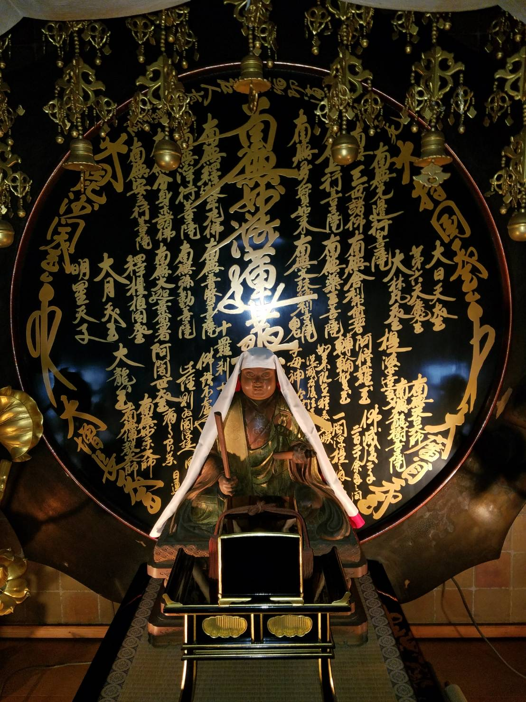
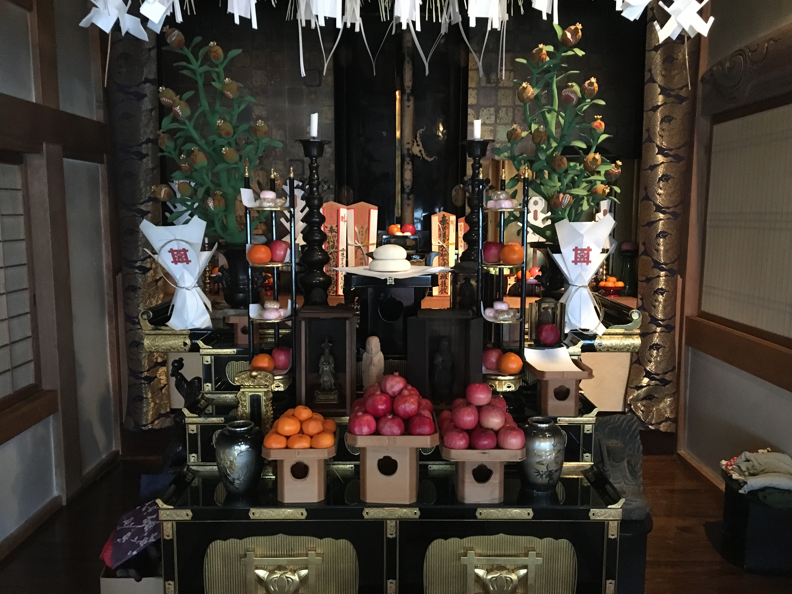
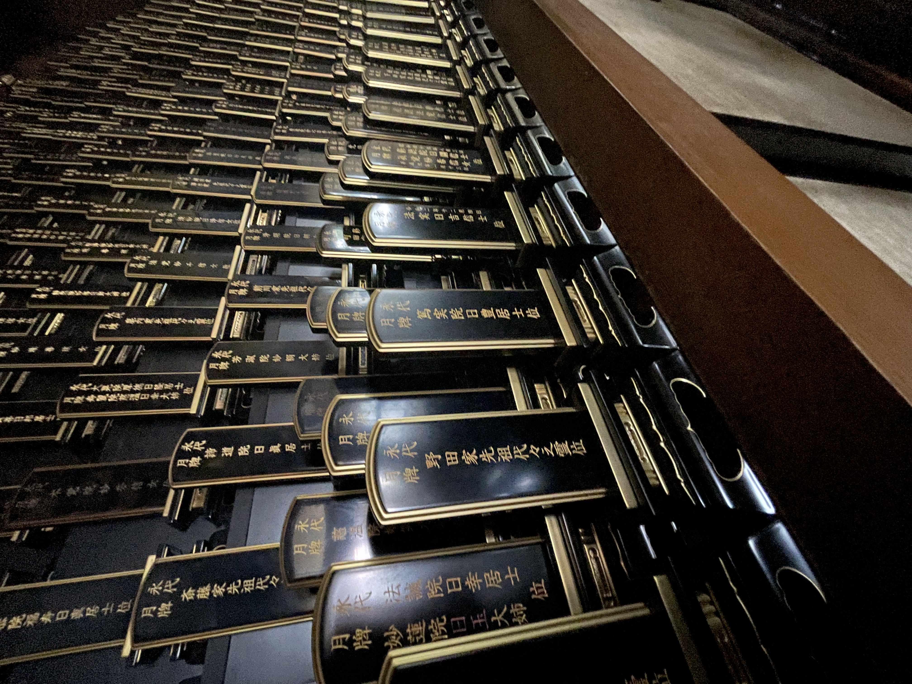
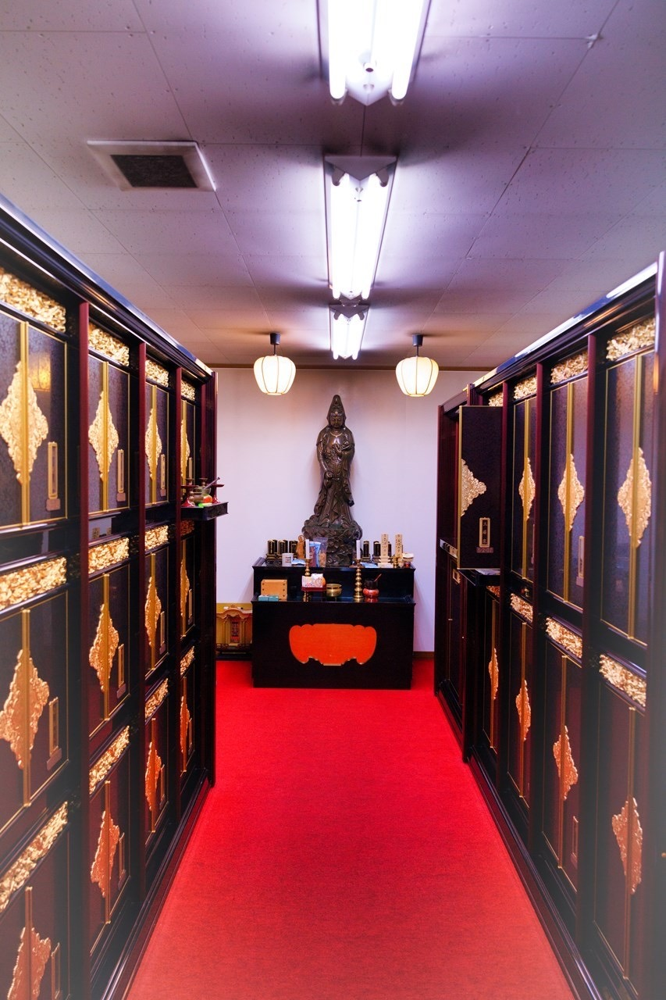
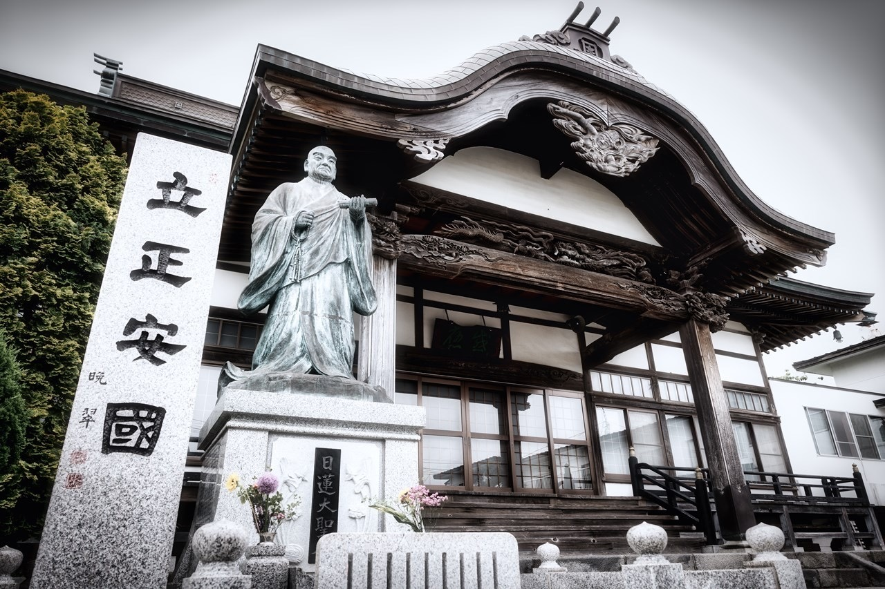
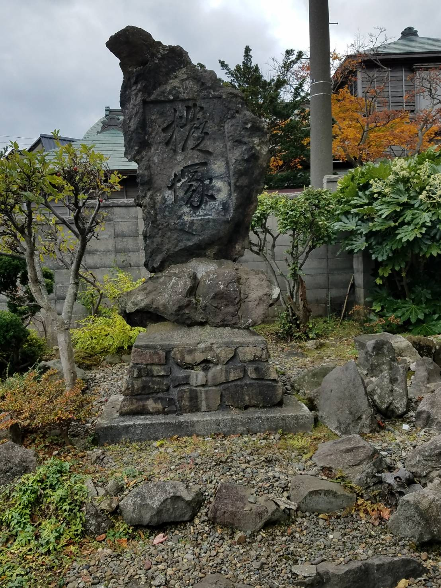
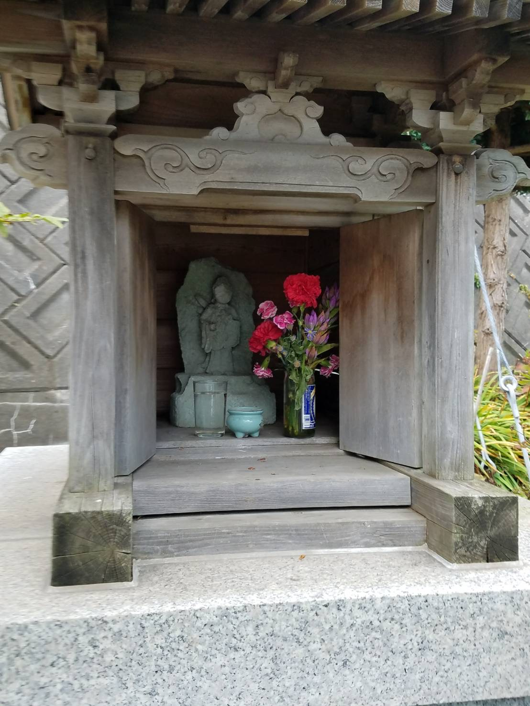
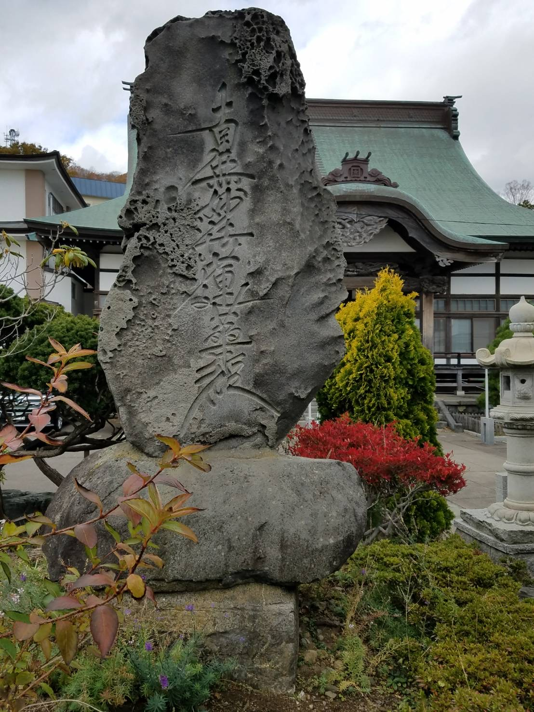

境内案内
室蘭の自然に抱かれた妙傳寺の境内には、心安らぐ祈りのスポットが点在しています。どなたでも、どうぞご自由にお参りください。
本堂（ほんどう）
お題目と日蓮大聖人が見守る、祈りの中心

当山の中心となる荘厳な空間です。御宝前には宗祖・日蓮大聖人が御安置され、皆さまが唱えるお題目の声を優しく受け止めてくださいます。
祈祷殿（きとうでん）
力強い守護神へ願いを届ける場所

妙傳寺をお守りする諸尊（守護神）が祀られています。日蓮宗伝統の「修法」をもって、厄除けや心願成就などのご祈祷を執り行う神聖な堂宇です。
永代位牌堂（えいたいいはいどう）
永劫の感謝を捧げる、魂の拠り所

永代供養を申し込まれた方々の位牌を大切にお祀りしています。日々の読経を通じて、故人様への感謝と祈りを永遠に繋ぎます。
納骨堂（のうこつどう）
天候を問わず、いつでも寄り添える安らぎの地

清潔に保たれた屋内型の供養施設です。季節や天候を気にすることなく、いつでも故人様との対話のひとときをお過ごしいただけます。
大広間（おおひろま）
お参り後のひとときや、地域の交流の場として

法要後の会食や、休憩・お集まりなど、多目的にご利用いただけます。皆さまが和やかに集い、心を休められる開放的な空間です。お子様が遊べるおもちゃも置いてあります。休憩中にご使用いただければ幸いです。
歴代廟（れきだいびょう）
当山の歴史を紡いだ上人と、廣瀬家への報恩

妙傳寺の礎を築いた開山・而實院日憲上人と、代々お寺を支えてきた廣瀬家の墓所です。今日の妙傳寺があることへの感謝を捧げる大切な場所です。
750遠忌日蓮大聖人像
未来を指し示す、日蓮聖人の威徳を偲ぶ像

日蓮大聖人の「立教開宗750年」を記念して建立されました。力強くも慈しみ深いお姿は、今を生きる私たちに勇気と希望を与えてくれます。
撥塚（ばちづか）
芸道への想いを供養する、杵屋会ゆかりの塚

杵屋会による三味線の「撥（ばち）」など、芸に使用された道具を長年の労を労い供養した塚です。道具への感謝を忘れない、日本独自の美しい心を表しています。
弁天堂（べんてんどう）
才能の開花と財運を司る、妙蘭弁才天

美しき女神、妙蘭弁才天が祀られています。芸事の上達や学問の成就、金運向上を願う多くの方々から親しまれています。
駐車場（ちゅうしゃじょう）
お車でも安心。約50台収容の広々とした駐車スペース

境内には約50台まで駐車可能なスペースをご用意しております。法要やお墓参りなど、大人数でお集まりの際も安心してお越しいただけます。
題目石（だいもくせき）
本堂前に佇む、お題目を刻んだ霊石

「南無妙法蓮華経」のお題目が力強く刻まれた石碑です。本堂を背景に佇むその姿は、訪れる人々の信仰の心を静かに支え、お題目の功徳を境内に広く伝えています。